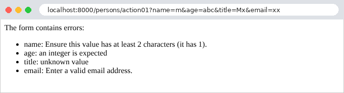

3. Das Modell einer View
Eine View benötigt Informationen, die der Browser sendet: die Parameter der URL ([?name=martin&age=42]), Formularfelder, den Body der Anfrage und manchmal einen Header der Anfrage. Der ursprüngliche Kurs bezeichnet all diese Informationen als Aktionsmodell; hier nennen wir es View-Modell. Dieses Kapitel zeigt, wie eine [Django] -View diese Informationen abruft, in den richtigen Typ umwandelt und validiert. Dieser Vorgang heißt Data Binding.
[Django] stellt die Informationen der Anfrage über das Objekt [HttpRequest] (Beispiel 05) in Form von Zeichenketten bereit. Um sie umzuwandeln und zu validieren, gibt es ein einziges zentrales Werkzeug: die Formulare aus dem Modul [django.forms]. Ein [Django]-Formular ist eine Klasse, die die erwarteten Daten Feld für Feld beschreibt: Jedes Feld kann die empfangene Zeichenkette in seinen Datentyp umwandeln (eine ganze Zahl, ein Datum, eine Liste usw.) und Einschränkungen prüfen („erforderlich“, „eine ganze Zahl zwischen 0 und 150“ usw.). Trotz ihres Namens sind Formulare nicht auf HTML-Formulare beschränkt: Sie validieren auch die Parameter einer URL oder ein JSON-Dokument. Wir lesen die Parameter zunächst manuell (Beispiel 07) und verwenden dann Formulare für ihre Umwandlung und Validierung (Beispiele 08 bis 12). Im nächsten Kapitel werden diese Formulare auch in HTML angezeigt.
Beachten Sie die Terminologie: Das Wort „Modell“ hat in [Django] eine bestimmte Bedeutung und bezeichnet die Klassen des ORM (Kapitel 7). Das Modell einer View, wie es in diesem Kapitel definiert wird, ist das, was sie von der Anfrage erhält. Die Klassen, die es beschreiben, organisieren wir in Dateien namens [viewmodels.py], niemals in [models.py], das dem ORM vorbehalten ist.
Die Beispiele 07 bis 12 werden auf dieselbe Weise ausgeführt wie die des vorigen Kapitels: Öffnen Sie ein Terminal im Verzeichnis des Beispiels, mit aktivierter virtueller Umgebung ([python manage.py runserver]); [Ctrl-C] stoppt den Server. Die meisten verwenden die Middleware [ReadableJson] aus Beispiel 03, was zu lesbarem JSON führt. Ihre Konfigurationsdateien kommentieren wir nur, wenn sie etwas Neues einführen.
3.1. Beispiel 07: Die Parameter der URL
Die Parameter einer URL sind der Teil, der auf [?] folgt: [?name=martin&age=42]. Dieser Teil heißt Query-String. Jeder Parameter ist ein Paar der Form [name=value]; die Paare werden durch [&] getrennt. Die Views der Anwendung [parameters]:
- Zeile 12: Das Attribut [GET] der Anfrage enthält die Parameter der URL. Sein Name ist irreführend: Es existiert unabhängig von der Methode der Anfrage, auch bei einer POST-Anfrage, deren URL Parameter hat. Es ist ein Objekt vom Typ [QueryDict], ein Dictionary, dessen Methode [get] den Wert eines Parameters – bereits dekodiert – oder [None] liefert, falls er fehlt;
- Zeile 13: Die View zeigt den Wert und seinen Typ an: [type(name)] liefert die Klasse des Werts, und [__name__] liefert den Namen dieser Klasse. Ein aus der URL gelesener Wert ist immer eine Zeichenkette ([str]);
- Zeilen 26–36: ein erforderlicher Parameter und eine manuelle Umwandlung, die zwischen den beiden möglichen Fehlern unterscheidet. Der Operator [is] prüft die Identität; [text is None] ist die korrekte Art, das Fehlen eines Werts zu prüfen. [raise BadRequest(message)] beendet die View mit einer 400-Antwort (Bad Request: Die Anfrage ist ungültig), genauso wie [Http404] die View mit einer 404-Antwort beendet hat (Beispiel 03). Die Funktion [int] wandelt eine Zeichenkette in eine ganze Zahl um und löst die Ausnahme [ValueError] aus, wenn die Zeichenkette keine ganze Zahl ist: Der Block [try] / [except] fängt diese Ausnahme ab, um unseren eigenen Fehler zurückzugeben;
- Zeile 42: Der zweite Parameter von [get] ist ein Standardwert, der verwendet wird, wenn der Parameter fehlt. Das ist ein typischer Fall für eine Seitennummer in einer Liste. Beachten Sie, dass der Standardwert eine Zeichenkette ist, ["1"], genau wie der empfangene Wert es wäre;
- Zeile 50: Es besteht keine Pflicht, die [Python]-Variable genauso zu nennen wie den Parameter der URL. Suchmaschinen verwenden oft einen kurzen Parameter wie [q] (query);
- Zeile 57: [dict()] liefert alle Parameter der URL in einem gewöhnlichen [Python]-Dictionary, das die View in JSON umwandelt (Beispiel 03).
Testen wir jede View mit [curl]. Ein Parameter ist vorhanden, dann fehlt er:
Die Anführungszeichen um die URL sind in einem Terminal notwendig: Ohne sie würde die Shell [&] (das unter [Linux]einen Befehl im Hintergrund ausführt) und [?] interpretieren. Der Wert [None] wird beim Einfügen in einen f-String zum Text [None]. Ein Wert mit Leerzeichen oder Sonderzeichen muss URL-kodiert werden: Ein Leerzeichen wird zu [%20] (oder [+]), und [&] wird zu [%26] (sonst würde es zwei Parameter trennen). Der Browser erledigt das automatisch; mit [curl] muss man es selbst schreiben. [Django] dekodiert den Wert, bevor die View ihn liest:
Ein Parameter, der existiert, aber leer ist ([?name=]), liefert eine leere Zeichenkette und nicht [None]: Die View kann die beiden Fälle unterscheiden. Der Wert für das Alter, gefolgt von der manuellen Umwandlung – erfolgreich, ohne Parameter und fehlgeschlagen:
Der Wert [42] , den View 02 erhält, ist eine Zeichenkette; der Wert aus View 03 ist nach der Umwandlung eine ganze Zahl. Die Funktion [int] toleriert Leerzeichen: [?age=%2042] („42“ mit vorangestelltem Leerzeichen) liefert ebenfalls 42. Beide Fehler führen zu einer 400-Antwort. Im Debug-Modus ist dies die Fehlerseite von [Django], die unsere Nachricht anzeigt:

Der Standardwert und der umbenannte Parameter:
Alle Parameter auf einmal. Der Parameter [name] kommt zweimal vor:
Der Parameter [name] behält im Dictionary nur seinen letzten Wert. In Beispiel 10 werden wir sehen, dass [request.GET] dagegen alle behalten hat. Das Alter blieb eine Zeichenkette (["42"], in JSON in Anführungszeichen eingeschlossen): Es wurde keine Umwandlung angefordert. In einem Browser (hier [Chromium]) wird JSON genau so angezeigt, wie der Server es formatiert hat; das Kontrollkästchen „Pretty-print“ würde es einrücken, wenn es nicht schon eingerückt wäre. Die Adressleiste zeigt auch die Kodierung von Umlauten und akzentuierten Zeichen in der URL ([é] wird zu [%C3%A9], mit seinen zwei Bytes in [UTF-8]):

Dieses erste Beispiel veranschaulicht die Grenzen des manuellen Ansatzes: Für jeden Parameter müssen Lesen, Umwandlung und Behandlung fehlender Werte und Fehler geschrieben werden. Bei zehn Parametern wäre der Code der View unter diesen Prüfungen begraben, und es gäbe keine Möglichkeit, die Regeln auszudrücken („eine Zeichenkette von 2 bis 20 Zeichen“). Besser ist es, zu beschreiben, was erwartet wird, und das Framework prüfen zu lassen. Das ist der Zweck des folgenden Beispiels.
3.2. Beispiel 08: Ein durch eine Klasse beschriebenes View-Modell
Ein View-Modell kann durch eine Klasse beschrieben werden: ein [Django]-Formular mit einem Feld pro erwartetem Parameter. Der Feldtyp legt fest, wie die empfangene Zeichenkette umgewandelt wird, und seine Parameter legen die Einschränkungen fest, die sie erfüllen muss. [Django] bietet etwa dreißig Feldtypen: [CharField] (eine Zeichenkette), [IntegerField], [DecimalField], [FloatField], [BooleanField], [DateField], [EmailField], [URLField], [ChoiceField] (ein Wert aus einer Liste), [MultipleChoiceField], [FileField] ...
3.2.1. Das Modell: persons/viewmodels.py
- Zeile 4: Import des Moduls [forms] aus [Django]. Das ist übliche Praxis: Die Felder heißen dann [forms.CharField], [forms.IntegerField] ...;
- Zeile 9: Ein Formular ist eine Klasse, die von [forms.Form] erbt;
- Zeilen 11–17: die Felder, geschrieben als Attribute der Klasse (nicht des Objekts: Sie sind im Rumpf der Klasse definiert, außerhalb jeder Methode). [Django] findet sie, indem es die Klasse untersucht; ihre Reihenfolge entspricht der der Deklaration. Alle Felder sind standardmäßig erforderlich ([required=True]): Ein fehlender oder leerer Parameter ist ein Fehler;
- Zeile 11: Der Name muss zwischen 2 und 20 Zeichen lang sein. Ein [CharField] entfernt außerdem die Leerzeichen am Anfang und Ende des Werts (Parameter [strip], Standardwert [True]), bevor es ihn validiert;
- Zeile 13: Das Alter ist eine ganze Zahl zwischen 0 und 150. Das Feld wandelt die Zeichenkette in eine ganze Zahl um – das ist die Funktion von View 03 in Beispiel 07, in einer einzigen Zeile;
- Zeile 15: Die Anrede muss einer der drei aufgeführten Werte sein. Die Optionen sind Paare (Wert, Bezeichnung): Die Bezeichnung wird verwendet, wenn das Feld auf einer Seite angezeigt wird (Beispiel 18);
- Zeile 17: Die E-Mail-Adresse ist optional ([required=False]); falls angegeben, muss sie gültig sein.
Dieses Modell beschreibt die erwarteten Daten; es enthält keine Validierungsanweisungen. Man spricht von einem deklarativen Stil. Ein Formular wird in drei Schritten verwendet: Es wird mit den empfangenen Daten erzeugt ([PersonModel(request.GET)]: ein an Daten „gebundenes“ Formular); es wird auf Gültigkeit geprüft ([is_valid()]), was die Umwandlung und Validierung jedes Felds auslöst; dann liest man entweder die umgewandelten Werte ([cleaned_data], ein Dictionary) oder die Fehler ([errors], ein Dictionary, das jedem fehlerhaften Feld die Liste seiner Meldungen zuordnet). Jedes Feld wird unabhängig von den anderen umgewandelt und validiert: Alle Fehler werden auf einmal erkannt.
3.2.2. Die Bindung: persons/binding.py
[Symfony] hatte ein Attribut, [#[MapQueryString]], das das Modell erstellte und validierte, bevor die Action aufgerufen wurde. [Django] hat für funktionsbasierte Views nichts Derartiges. Aus Beispiel 02 wissen wir aber, dass ein Dekorator eine View umhüllen kann, um vor ihr zu agieren: Schreiben wir einen Dekorator, der das Modell aus den Parametern der URL erstellt, es validiert und an die View übergibt.
- Zeilen 8–11: eine „benutzerdefinierte“ Ausnahme: eine Klasse, die von der Klasse [Exception] von [Python] erbt. Ihr Konstruktor ruft den Konstruktor der Elternklasse auf ([super().__init__(...)], mit der Nachricht der Ausnahme) und speichert dann das Formular in einem Attribut: Wer die Ausnahme abfängt, findet dort die Fehler;
- Zeilen 17–28: ein parametrisierter Dekorator. [@from_url(PersonModel)] wird in zwei Schritten ausgeführt: [from_url(PersonModel)] liefert die Funktion [decorator], die auf die View angewendet wird und ihrerseits die Funktion [wrapper] liefert, die die View ersetzt. Innerhalb einer anderen Funktion definierte Funktionen behalten deren Variablen ([model_class], [view]) auch dann, wenn jene ihre Arbeit beendet hat: Das nennt man eine Closure;
- Zeile 20: [@wraps(view)] aus dem Modul [functools] gibt dem Wrapper den Namen und die Dokumentation der View: Fehlermeldungen und Werkzeuge von [Django] verweisen weiterhin auf [action01] und nicht auf [wrapper];
- Zeile 21: Der Wrapper erhält, was [Django] an die View übergibt: die Anfrage, gefolgt von den Routenparametern, die er nicht im Voraus kennt. [*args] nimmt die per Position übergebenen Parameter auf (in einem Tupel), während [**kwargs] die per Namen übergebenen aufnimmt (in einem Dictionary); beim Aufruf in Zeile 26 reichen [*args] und [**kwargs] sie unverändert weiter;
- Zeilen 22–24: Das Formular wird an die Parameter der URL gebunden und validiert; ist es ungültig, löst der Wrapper eine Ausnahme aus, und die View wird nie aufgerufen – sie muss sich also nicht um ungültige Daten kümmern;
- Zeile 26: Andernfalls wird die View mit einem zusätzlichen Parameter aufgerufen: den umgewandelten und validierten Werten.
3.2.3. Die View: persons/views.py
- Zeilen 14–15: Zwei Dekoratoren sind gestapelt; der der Funktion am nächsten stehende wird zuerst angewendet. [require_GET] umhüllt also den Wrapper von [from_url]: Die HTTP-Methode wird vor den Parametern geprüft;
- Zeile 16: Die View erhält das validierte Modell in Form eines Dictionarys;
- Zeilen 17–21: Die View gibt die empfangenen Parameter unverändert zurück, gefolgt vom Modell und dem Typ des Alters, um den Unterschied zu veranschaulichen.
3.2.4. Fehlerbehandlung: config/middleware.py
Wer behandelt die Ausnahme [InvalidModel]? Ohne weiteres Zutun behandelt [Django] sie selbst mit einer 500-Antwort: Für Django ist sie eine Ausnahme wie jede andere. Wir wünschen uns eine Fehlerantwort in JSON mit dem Statuscode 400 in unserem eigenen Format. Das ist die Aufgabe einer Middleware:
- Zeilen 11–20: die Middleware [ReadableJson] aus Beispiel 03;
- Zeilen 25–30: eine zweite Middleware, deren Methode [__call__] die Anfrage einfach an die nächste Komponente der Kette weiterreicht;
- Zeilen 35–42: die Methode [process_exception]. Zusätzlich zu [__call__] kann ein Middleware-Modul Methoden besitzen, die [Django] an bestimmten Stellen der Verarbeitung aufruft (das Kapitel über den Lebenszyklus behandelt sie alle). [process_exception] wird aufgerufen, wenn in der View eine Ausnahme ausgelöst wird. Sie liefert entweder eine Antwort – die die von [Django] erzeugte Fehlerseite ersetzt – oder gibt [None] zurück, sodass [Django] die Ausnahme wie gewohnt behandelt. Da die Middleware in der Konfiguration [MIDDLEWARE] deklariert ist, gilt sie für alle Views der Anwendung: Jede View, die ein Modell validiert, profitiert davon, ohne eine einzige Zeile Fehlerbehandlungscode schreiben zu müssen;
- Zeile 36: Handelt es sich nicht um einen Validierungsfehler, tut die Middleware nichts;
- Zeilen 39–41: Die Liste der Fehler in Form von Dictionaries wird mit einer List Comprehension mit zwei Schleifen berechnet: [for] – für jedes Feld mit einem Fehler, für jede diesem Feld zugeordnete Meldung. [items()] durchläuft ein Dictionary in (Schlüssel, Wert)-Paaren;
- Zeile 42: eine JSON-Antwort mit dem Statuscode 400. Sie läuft dann die Middleware-Kette hinauf und durchläuft [ReadableJson] (Zeilen 18–20 der Datei [config/settings.py]).
3.2.5. Ausführung
Ein gültiges Modell:
Die empfangenen Parameter sind Zeichenketten; das Modell enthält das Alter als ganze Zahl (ohne Anführungszeichen in JSON), und die fehlende Adresse ist die leere Zeichenkette (der „leere“ Wert eines [CharField] oder eines [EmailField]; der eines optionalen [IntegerField] wäre [None]). Ein von Leerzeichen umgebener Name ([%20]) und eine vorhandene Adresse:
Die den Namen umgebenden Leerzeichen wurden vom Feld entfernt: Die View erhält den bereinigten Wert ([cleaned_data]). Ein Name, der nur aus Leerzeichen besteht, wäre daher leer und würde als fehlend abgelehnt. Nun ohne Parameter: Die drei erforderlichen Felder fehlen.
Die Meldungen sind auf Englisch. Die Meldungen der Formulare sind im Code von [Django] auf Englisch geschrieben, durchlaufen aber dessen Übersetzungsmechanismus, und [Django] wird mit ihren Übersetzungen in etwa hundert Sprachen ausgeliefert: Mit der Einstellung [LANGUAGE_CODE = "fr"] wären sie auf Französisch. Alle unsere Beispiele verwenden seit Beispiel 01 die Einstellung [LANGUAGE_CODE = "en"]. Vier ungültige Felder auf einmal:
Alle Fehler werden auf einmal gemeldet, sodass der Benutzer alles in einem Zug korrigieren kann. Schließlich ein Alter, das keine Zahl ist:
Wieder werden alle vier Fehler gemeldet: Die fehlgeschlagene Umwandlung des Alters ist ein Fehler des Felds [age], genau wie die anderen. Das unterscheidet sich von [Symfony], wo der Kurs gezeigt hat, dass eine fehlgeschlagene Umwandlung die Validierung vollständig verhinderte, weil sie die Konstruktion des Objekts verhinderte: Ein [Django]-Formular dagegen wandelt jedes Feld getrennt um und validiert es.
3.3. Beispiel 09: Validierung durch die View
In Beispiel 08 unterbricht ein ungültiges Modell die View, und die Middleware der Anwendung antwortet. Das ist praktisch für eine API, deren Clients Programme sind, die eine standardisierte Fehlerantwort erwarten. Eine Webseite zeigt dagegen oft lieber das Formular mit Fehlermeldungen erneut an: In diesem Fall muss die View entscheiden, was mit einem ungültigen Modell geschieht. Sie verwendet das Formular direkt, ohne Dekorator. Das Beispiel hat keine Middleware mehr:
3.3.1. Das Modell: persons/viewmodels.py
Das Modell enthält die Felder aus Beispiel 08, diesmal jedoch mit unseren eigenen Fehlermeldungen:
- Zeile 9: ein Dictionary, einmal für alle definiert und von den drei erforderlichen Feldern gemeinsam genutzt. Per Konvention ist eine in Großbuchstaben geschriebene Modulvariable eine Konstante;
- Zeilen 13–18: Der Parameter [error_messages] eines Felds ersetzt dessen Meldungen durch unsere. Jede Fehlerart hat einen Code: [required] (Feld fehlt oder ist leer), [invalid] (Wert kann nicht umgewandelt werden: ein Alter [abc]), [invalid_choice] (Wert nicht in der Liste), [min_length], [max_length], [min_value], [max_value] ... Das Dictionary ordnet jedem Code eine Meldung zu. Meldungen, die nicht im Dictionary aufgeführt sind, stammen von [Django];
- Zeile 16: Der Operator [|] führt zwei Dictionaries zusammen: Das Ergebnis enthält die Schlüssel beider (bei einem gemeinsamen Schlüssel hat der rechte Vorrang). So hat „age“ bei uns zwei Meldungen.
Die Meldungen von [Django] sind nicht immer passend; wir haben soeben gesehen, wie man sie Feld für Feld ersetzt. Um sie in der gesamten Anwendung zu ersetzen, stellt man Übersetzungen bereit (siehe das Kapitel über Internationalisierung): Diese Übersetzungen – und nicht [error_messages] – sind in einer mehrsprachigen Anwendung zu verwenden.
3.3.2. Die View: persons/views.py
- Zeile 14: Die View erzeugt das an die Parameter der URL gebundene Formular;
- Zeile 16: [is_valid()] wandelt jedes Feld um, validiert es und speichert eventuelle Fehler in [person_input.errors]. Es löst keine Ausnahme aus: Die View entscheidet selbst, wie es weitergeht;
- Zeilen 19–22: Die Fehler werden Feld für Feld jeweils in ein [<li>]-Tag eingeschlossen. [format_html_join] erzeugt für jedes Element einer Folge von Werten (hier (Feld, Meldung)-Paare, die von einem Generatorausdruck erzeugt werden) ein HTML-Fragment auf Grundlage eines Textmusters, [<li>{}: {}</li>]: Jedes [{}] erhält einen Wert des Paars. [format_html] tut dasselbe für ein einzelnes Fragment. Diese beiden Funktionen aus dem Modul [django.utils.html] haben eine wesentliche Eigenschaft: Die eingefügten Werte werden escaped;
- Zeilen 23–25: Bei Erfolg wird eine Willkommensnachricht mit den umgewandelten Werten angezeigt.
Einen Wert zu escapen bedeutet, die Zeichen, die in HTML eine Bedeutung haben ([<], [>], [&], ["], [']), durch ihre Entitäten ([<], [>] ...) zu ersetzen: Sie werden dann unverändert angezeigt, statt interpretiert zu werden. Ohne diese Vorkehrung könnte ein Benutzer einen „Namen“ eingeben, der HTML oder sogar [JavaScript] enthält und im Browser jedes Besuchers der Seite ausgeführt würde. Das ist die häufigste Sicherheitslücke im Web: die Skript-Injektion (XSS, Cross-Site-Scripting). Ein f-String dagegen escaped nichts: [HttpResponse(f"Welcome {name}")] wäre verwundbar. [format_html] liefert als „sicher“ markierten Text (ein Objekt vom Typ [SafeString]): Bereits escapte Teile werden beim Einfügen in einen anderen Text nicht ein zweites Mal escaped ([items], Zeile 22). Im nächsten Abschnitt führen die Templates von [Django] dieses Escaping für jeden in eine Seite eingefügten Wert automatisch durch.
Eine gültige Eingabe, gefolgt von einer Eingabe mit vier Fehlern:


Die Meldungen sind auf Englisch: die von [Django] (Name, Adresse) und unsere eigenen (Alter, Anrede). Die Rohantwort auf die zweite Anfrage – die mit einem Namen, der HTML enthält – und die Antwort auf eine Anfrage ohne Namen und mit einem zu hohen Alter:
Der Name [<b>martin</b>] (in der URL als [%3Cb%3E...] kodiert) wird unverändert angezeigt, ohne fett dargestellt zu werden: Seine Tags wurden entschärft. Beachten Sie, dass die Antwort diesmal den Statuscode 200 hat: Die View hat sich entschieden, eine normale Seite mit den Fehlern auszugeben.
3.4. Beispiel 10: Mehrfache Parameter
Derselbe Parameter kann in einer URL mehrfach vorkommen: [?color=red&color=green]. Das sendet ein Browser für eine Gruppe von Kontrollkästchen mit demselben Namen oder für eine Mehrfachauswahlliste (siehe nächstes Kapitel). Die Views der Anwendung [arrays]:
- Zeilen 11–13: [get] liefert den letzten Wert des Parameters. Die View gibt zum Vergleich außerdem die rohe Parameterzeichenkette zurück, so wie der Browser sie gesendet hat;
- Zeilen 19–21: [getlist] liefert alle Werte des Parameters in einer Liste; die Liste ist leer, wenn der Parameter fehlt. Das ist der Zweck der Klasse [QueryDict]: ein Dictionary, das jedem Schlüssel eine Liste von Werten zuordnet und dessen Methode [get] für den häufigsten Fall nur den letzten Wert liefert;
- Zeilen 26–29: das View-Modell 03, ein Formular mit einem einzigen Feld. Ein [MultipleChoiceField] erhält eine Liste von Werten und prüft, dass jeder zur Liste der Auswahlmöglichkeiten gehört; da es erforderlich ist, verlangt es mindestens einen Wert. Seine Meldung [invalid_choice] enthält den Platzhalter [%(value)s], den [Django] durch den fehlerhaften Wert ersetzt (das ist die Syntax der Formatzeichenketten von [Python] mit dem Operator [%]). Eine Klasse kann in der Datei der Views definiert werden; sie braucht kein eigenes Modul;
- Zeilen 34–38: Das Formular wird an die Parameter der URL gebunden: Es liest alle Werte des Parameters [color] selbst, weil sein Feld ein Feld mit mehreren Werten ist. Die View gibt die empfangenen Farben, das Ergebnis der Validierung und etwaige Fehler des Felds zurück ([errors.get("color", [])]: die Liste der Meldungen oder eine leere Liste, wenn das Feld keine Fehler hat).
Die Ergebnisse:
Für HTML genügt es, den Kontrollkästchen einer Gruppe denselben Namen zu geben (die Formulare in [Django] erledigen das für uns; siehe Beispiel 18). Das ist ein Unterschied zu [PHP], dem die Leser des Kurses [Symfony] begegnet sind: [PHP] behält von einem wiederholten Parameter nur den letzten Wert, es sei denn, sein Name endet mit eckigen Klammern ([color[]]). [Django] behält wie [Flask], [Spring MVC] oder [ASP.NET Core] alle Werte – ohne eckige Klammern. Tatsächlich sind eckige Klammern für das System nur zwei Zeichen im Namen: [?color[]=red] definiert einen Parameter namens [color[]], den [getlist("color")] nicht sehen kann.
Validierung: zunächst erfolgreich, dann fehlgeschlagen wegen einer unbekannten Farbe, dann wegen einer leeren Liste:
Die Fehlermeldung nennt den fehlerhaften Wert [black].
3.5. Beispiel 11: Parameter einer POST-Anfrage
Die vorigen Beispiele verwendeten GET-Anfragen, deren Parameter in der URL stehen. Eine POST-Anfrage überträgt ihre Daten in ihrem Body, hauptsächlich in zwei Formen:
- die Felder eines HTML-Formulars: Der Body hat dieselbe Syntax wie ein Query-String ([name=martin&age=42]), und sein Typ (Header [Content-Type]) ist [application/x-www-form-urlencoded] (oder [multipart/form-data] bei einem Formular, das Dateien sendet);
- ein JSON-Dokument, gesendet von einem Programm ([JavaScript] auf einer Seite, Client einer API ...): Der Typ ist [application/json].
Die Views der Anwendung [post]:
- Zeilen 15, 27, 41, 48: Alle Views akzeptieren nur die Methode POST (Dekorator [require_POST]);
- Zeile 18: der Header [Content-Type] der Anfrage;
- Zeilen 19–21: Das Attribut [POST] der Anfrage enthält die Felder eines Formular-Bodys in einem [QueryDict], ebenso wie [GET] (Beispiele 07 und 10): [get], [getlist], [dict] ... Es ist bei jedem anderen Body-Typ leer, insbesondere bei einem JSON-Body;
- Zeile 30: [content_type] ist der Typ des Bodys, gelesen aus dem Header [Content-Type] (ohne einen eventuell folgenden Zeichensatz). Ein Body, der nicht vom Typ JSON ist, wird mit dem Fehler 415 (Unsupported Media Type) abgelehnt;
- Zeilen 32–35: [Django] dekodiert einen JSON-Body nicht: Das Attribut [body] enthält den rohen Body in Byte-Form, den die Funktion [json.loads] deserialisiert: Der JSON-Text wird zu einem Dictionary (oder einer Liste, einer Zahl ...). Ein fehlerhaftes JSON löst die Ausnahme [json.JSONDecodeError] aus, die vom Block [try] / [except] abgefangen wird; [as e] weist der Ausnahme einen Namen zu, um ihre Meldung in unsere eigene in einer 400-Antwort einzufügen;
- Zeilen 41–44: ein einzelnes Feld, gelesen aus den Daten des Bodys, sei es ein Formular oder ein Dokument (JSON): Das ist die Aufgabe der Funktion [body_data], die weiter unten beschrieben wird;
- Zeilen 48–51: Der Dekorator [from_body] ist das Gegenstück des Dekorators [from_url] aus Beispiel 08 für den Body der Anfrage: Er erstellt aus den Feldern des Formulars oder des JSON-Dokuments ein [PersonModel] (das Formular aus Beispiel 08) und validiert es. Ein ungültiges Modell löst die Ausnahme [InvalidModel] aus, die die Middleware [ValidationErrors] aus Beispiel 08 in eine 400-Antwort umwandelt.
Die Datei [post/binding.py]:
- Zeilen 18–27: Daten des Bodys in einem Dictionary: das dekodierte JSON-Dokument oder die Formularfelder ([request.POST]). Ein JSON-Dokument, das kein Objekt ist (eine Liste, eine Zahl), kann ein Formular nicht befüllen: Das führt zu einem 400-Fehler;
- Zeilen 32–41: der Dekorator, identisch mit dem aus Beispiel 08, abgesehen von der Datenquelle (Zeile 36). Ein [Django]-Formular akzeptiert jedes Dictionary, nicht nur ein [QueryDict]: Das ermöglicht es ihm, auch ein JSON-Dokument zu validieren.
Bei einer POST-Anfrage ist ein Punkt erwähnenswert: [Django] verlangt nichts weiter, um sie zu akzeptieren, da unsere Beispiele noch nicht die Middleware für den CSRF-Schutz enthalten (Beispiel 18). Mit [curl] sendet die Option [-d] (data) einen Body; die Anfrage wird dann zu einer POST-Anfrage vom Typ [application/x-www-form-urlencoded], es sei denn, die Option [-H] (Header) gibt einen anderen Typ an. Die Option [-X POST] legt die Methode ausdrücklich fest (hier ist sie optional). Die Felder eines Formulars, einschließlich eines wiederholten Felds:
Ein JSON-Body, der eine ganze Zahl und ein Array enthält:
Den Anführungszeichen in JSON wird ein [\] vorangestellt, damit die Befehlszeichenkette nicht endet; unter [Linux] und [macOS] kann man JSON auch in Apostrophe einschließen: [-d '{"name": "martin"}']. Anders als Formularfelder transportiert JSON Datentypen: Das Alter ist bereits eine ganze Zahl. Ein Body, der kein JSON ist, gefolgt von einem fehlerhaften JSON:
Die zweite Antwort ist die Fehlerseite von [Django], die unsere Meldung anzeigt: [malformed JSON: Expecting property name enclosed in double quotes: line 1 column 2 (char 1)] (in JSON müssen Eigenschaftsnamen in Anführungszeichen stehen). Ein einzelnes Feld, zuerst im Formular, dann in JSON, gefolgt von derselben mit GET angeforderten URL:
Die URL existiert, aber nicht für die Methode GET: [Django] liefert eine 405-Antwort (Method Not Allowed), und ihr Header [Allow] listet die akzeptierten Methoden auf (Beispiel 02). Schließlich das an den Body der Anfrage gebundene Modell, zuerst über ein gültiges Formular, dann über ein ungültiges und schließlich über ein JSON-Dokument:
Die letzte Anfrage sendet das Alter als Zeichenkette (["42"], in Anführungszeichen), während das Modell eine ganze Zahl erwartet: Das Formular wandelt es um, genau wie es die Felder eines HTML-Formulars umwandelt. Ein [Django]-Formular ist für Textdaten konzipiert; es akzeptiert auch einen bereits umgewandelten Wert (die ganze Zahl 42 aus JSON). Ein API-Formular mit strengeren Typanforderungen würde stattdessen die Erweiterung [Django REST framework] verwenden, deren Serializer die Zeichenkette ["42"] von der ganzen Zahl 42 unterscheiden.
3.6. Beispiel 12: Benutzerdefiniertes Binding und benutzerdefinierte Validierung
Die Standardkonverter und -felder genügen nicht immer. Dieses Beispiel zeigt drei Möglichkeiten, Binding und Validierung zu erweitern:
- ein „benutzerdefinierter“ Routenkonverter: ein Datum im französischen Format, [23-09-2026], im Pfad der URL, das der View als Objekt bereitgestellt wird;
- eine Middleware, die der View eine Information liefert, die nicht aus der URL, sondern aus einem HTTP-Header stammt;
- ein „benutzerdefinierter“ Validator (keine Leerzeichen) und die Umwandlung eines Datums im Format [dd/mm/yyyy] mit einer Methode des Formulars.
3.6.1. Ein an einen Routenparameter gebundenes Objekt: bindings/converters.py
In Beispiel 02 haben wir die Konverter von [Django] betrachtet: [int], [str], [slug], [uuid], [path]. Die Anwendung kann eigene schreiben. Wir schreiben einen für ein Datum im französischen Format, dargestellt durch die Klasse [DayFr]:
- Zeilen 7–9: eine unveränderliche Datenklasse, deren einziges Attribut ein Datum ist, ein Objekt vom Typ [date] aus dem Modul [datetime] der Standardbibliothek;
- Zeilen 13–20: eine Klassenmethode, gekennzeichnet mit [@classmethod]: Sie wird auf der Klasse aufgerufen, [DayFr.from_url("23-09-2026")], und erhält die Klasse selbst als ersten Parameter, der per Konvention [cls] heißt. Sie erzeugt aus dem Pfadtext ein Objekt vom Typ [DayFr] oder gibt [None] zurück, wenn der Text ungültig ist. [datetime.strptime] parst eine Zeichenkette nach einem bestimmten Format: [%d] für den Tag, [%m] für den Monat und [%Y] für das vierstellige Jahr; es liefert ein Objekt vom Typ [datetime] (Datum und Uhrzeit), von dem [.date()] nur das Datum behält. Es löst eine [ValueError]-Ausnahme aus, wenn der Text nicht dem Format entspricht oder das Datum nicht existiert: Der 31. Februar wird abgelehnt. [cls(...)] erzeugt ein Objekt der Klasse;
- Zeilen 23–24: die Umkehroperation. Die Methode [__str__] legt fest, wie das Objekt in eine Zeichenkette umgewandelt wird ([str(day)] oder ein f-String); [strftime] schreibt ein Datum in einem bestimmten Format;
- Zeilen 28–41: der Konverter, eine Klasse mit einem Attribut und zwei Methoden, die [Django] an ihren Namen erkennt (es ist keine Elternklasse erforderlich: [Python] verlangt lediglich, dass ein Objekt die richtigen Attribute besitzt – das nennt man „Duck Typing“);
- Zeile 30: [regex] ist der reguläre Ausdruck, dem das Pfadsegment entsprechen muss: [[0-9]] bezeichnet eine Ziffer, [{2}] bezeichnet die Wiederholung des vorangehenden Musters: zwei Ziffern, ein Bindestrich, zwei Ziffern, ein Bindestrich, vier Ziffern. Ein Segment mit einem anderen Format passt nicht zur Route. Das Präfix [r] bei der Raw-Zeichenkette weist [Python] an, Backslashes, die in regulären Ausdrücken häufig sind, nicht zu interpretieren;
- Zeilen 33–37: [to_python] wandelt den Text des Segments in einen Wert um, der an die View übergeben wird. Löst es [ValueError] aus, [Django] betrachtet die Route als nicht passend und versucht die folgenden Routen; schließlich tritt ein 404-Fehler auf;
- Zeilen 40–41: [to_url] leistet das Umgekehrte, während [reverse] die URL einer Route (Beispiel 04) aus einem [DayFr]-Objekt erzeugt.
Der Konverter muss unter einem Namen registriert werden, bevor er zum ersten Mal in einer Route verwendet wird. Das erledigt die Datei [config/urls.py]:
- Zeile 9: [register_converter] registriert den Konverter unter dem Namen [dayfr]: Routen können nun [<dayfr:day>] schreiben, genau wie [<int:id>].
3.6.2. Ein von der Middleware bereitgestellter Parameter: config/middleware.py
Damit eine View Informationen erhält, die aus der Anfrage berechnet werden, kann man diese auch von einer Middleware berechnen lassen (Beispiel 03), die sie in die Anfrage einfügt, bevor diese die View erreicht:
- Zeile 4: eine Funktion aus dem [Django]-Übersetzungsmodul;
- Zeilen 14–21: Die Middleware wird vor der View ausgeführt, da ihr Code dem Aufruf von [self.get_response] vorausgeht;
- Zeile 18: Der Anfrage-Header [Accept-Language] gibt die Sprachen des Benutzers in der Reihenfolge ihrer Präferenz an: [fr-FR,fr;q=0.9,en;q=0.8] (der Koeffizient [q] misst die Präferenz auf einer Skala von 0 bis 1). [get_language_from_request] wählt aus den von der Anwendung unterstützten Sprachen (die Einstellung [LANGUAGES], Zeilen 24–27 der Datei [config/settings.py]) diejenige aus, die der Benutzer bevorzugt; fehlt der Header oder passt keine der Sprachen, wird die in der Einstellung [LANGUAGE_CODE] angegebene Sprache verwendet. Die Middleware speichert die Sprache in einem neuen Attribut der Anfrage, [language]: Einem [Python]-Objekt können jederzeit Attribute hinzugefügt werden. So stellt [Django] selbst den Views Informationen bereit: [request.user] (der angemeldete Benutzer), [request.session] (die Sitzung), [request.LANGUAGE_CODE] (die Sprache) ... werden von Middleware hinzugefügt;
- Zeilen 26–38: die Antwort auf eine fehlgeschlagene Validierung. Sie soll sich von der in Beispiel 08 unterscheiden: die Meldung zum ersten Fehler als reiner Text mit dem Statuscode 400. [errors.values()] durchläuft die Meldungslisten; [iter] liefert einen Iterator über diese Listen, aus dem [next] die erste abruft; [[0]] bezeichnet die erste Meldung dieser Liste.
Die Middleware wird für alle Anfragen ausgeführt. Eine Middleware, die nur für bestimmte Views wirken soll, prüft selbst den Pfad der Anfrage ([request.path]) oder in ihrer Methode [process_view] (siehe das Kapitel zum Lebenszyklus) die View, die gleich aufgerufen wird. Für eine einzelne View ist ein Dekorator besser geeignet, etwa [from_url]. Die View findet die Information anschließend in der Anfrage (siehe Views).
3.6.3. Ein „benutzerdefinierter“ Validator und eine Konvertierung: validators.py und viewmodels.py
Ein Validator ist eine Funktion, die den – bereits konvertierten – Wert eines Feldes erhält und die Ausnahme [ValidationError] auslöst, wenn er ungültig ist:
- Zeilen 8–10: Der Operator [in] prüft, ob ein Text in einer Zeichenkette enthalten ist. [ValidationError] ist die Ausnahme, die auch die Felder von [Django] selbst auslösen; ihr Parameter [code] ([space]) würde es einem Formular erlauben, die Meldung durch [error_messages] zu ersetzen, ähnlich den Codes von [Django] (Beispiel 09). Der Validator wird nur aufgerufen, wenn ein Wert vorhanden ist: Das Fehlen eines Werts wird vom Parameter [required] des Feldes behandelt.
Der Validator wird vom Suchmodell verwendet:
- Zeile 13: Der Parameter [validators] eines Feldes ist die Liste seiner „benutzerdefinierten“ Validatoren, die nach den eigenen Prüfungen des Feldes aufgerufen werden. [Django] stellt im Modul [django.core.validators] vordefinierte Validatoren bereit: [RegexValidator], [MinValueValidator], [URLValidator] ...;
- Zeile 15: Das Datum wird als Zeichenkette empfangen. Ein [DateField] könnte es selbst konvertieren (mit [input_formats=["%d/%m/%Y"]]); wir konvertieren es manuell, um eine andere Vorgehensweise zu zeigen;
- Zeilen 19–26: Eine Methode, deren Name [clean_] gefolgt vom Namen eines Feldes lautet, wird von [is_valid()] nach den Feldprüfungen aufgerufen. Sie ruft den Wert des Feldes aus [self.cleaned_data] ab; ihr Rückgabewert ersetzt diesen Wert, und ein von ihr ausgelöster [ValidationError] wird zu einem Feldfehler. Hier konvertiert sie die Zeichenkette in ein Datum: Die View erhält ein gültiges Datum. Das ist der gebräuchlichste Weg, einem Feld eine Regel oder eine eigene Konvertierung hinzuzufügen; für eine Regel, die mehrere Felder betrifft, überschreibt man die Methode [clean] des Formulars (Beispiel 19).
3.6.4. Views: bindings/views.py
- Zeilen 14–19: Die View erhält das vom Konverter erzeugte Objekt [DayFr]. Sie zeigt das Datum im internationalen Format an ([isoformat()]: [2026-09-23]) sowie die URL der Route, die von [reverse] (Beispiel 04) erzeugt wird, wobei das Objekt [DayFr] als Parameter übergeben wird: [Django] wandelt es mit der Methode [to_url] des Konverters in Text um. Die URL bezieht sich auf die Website ([/examples/...]); [request.build_absolute_uri(url)] würde sie absolut machen. Zwei nebeneinander in Klammern geschriebene f-Strings werden von [Python] zu einer einzigen Zeichenkette verkettet;
- Zeilen 25–26: Die View liest die von der Middleware [DetectLanguage] berechnete Information. [a if condition else b] ist der bedingte Ausdruck von [Python];
- Zeilen 30–34: das Abfragemodell, gebunden an die URL-Parameter und validiert durch den Dekorator aus Beispiel 08 (Datei [bindings/binding.py]). Die View erhält nur gültige Modelle; das Datum ist bereits ein [date] - oder [None] -Objekt.
3.6.5. Ausführung
Das dem Routenparameter zugeordnete Objekt:
Das Datum wird im internationalen Format angezeigt, aber die von [reverse] erzeugte URL ist wieder zum französischen Format zurückgekehrt. Den 31. Februar gibt es nicht: 404, weil unser Konverter das Segment abgelehnt hat. Ein Datum im internationalen Format, [2026-09-23], entspricht nicht dem durch den regulären Ausdruck beschriebenen Muster: ebenfalls 404, ohne dass [to_python] überhaupt aufgerufen wird. In beiden Fällen listet die Fehlerseite von [Django] die Routen auf, darunter [examples/ schedule/<dayfr:day>].
Die Middleware. Die Option [-H] von [curl] setzt den Header [Accept-Language]:
[fr-FR] steht nicht in der Sprachliste der Anwendung, aber [Django] kann auf die allgemeine Sprache [fr] zurückgreifen. Deutsch ist überhaupt nicht enthalten, und [curl] sendet keinen [Accept-Language]-Header: In beiden Fällen wird die in den Einstellungen angegebene Sprache verwendet ([LANGUAGE_CODE]). Das Kapitel zur Internationalisierung geht auf dieses Thema ein, wobei der Benutzer die Sprache auswählt.
Der „hauseigene“ Validator und die Datumskonvertierung:
Die zweite Anfrage enthält zwei Fehler; die Middleware gibt nur den ersten zurück, nämlich den zum Schlüsselwort. Ohne Parameter ist das Modell gültig: Beide Felder sind optional.
3.6.6. Fazit
Fassen wir die Möglichkeiten zusammen, die einer View zur Verfügung stehen, um an ihr Modell zu gelangen:
Quelle | Methoden |
Routenparameter | die Parameter der View mit denselben Namen; konvertiert durch einen Konverter ([<int:id>]); ein „benutzerdefinierter“ Konverter ([regex], [to_python], [to_url], [register_converter]) verbindet sie mit einem Objekt |
URL-Parameter | [request.GET.get(...)], [getlist], [dict]; ein wiederholter Parameter behält alle seine Werte |
Felder eines POST-Formulars | [request.POST.get(...)], [getlist], [dict] |
JSON-Body | [json.loads(request.body)], nach Prüfung von [request.content_type] |
Durch eine Klasse beschriebenes Modell | ein [Django]-Formular ([forms.Form]): Konvertierung und Validierung jedes Feldes ([is_valid], [cleaned_data], [errors]); ein Dekorator, der dies vor der View ausführt |
Header | [request.headers.get(...)] und Funktionen, die sie auswerten, wie [get_language_from_request] |
Validierung | Feldparameter ([required], [min_length], [min_value] ...); „benutzerdefinierte“ Validatoren ([validators], [ValidationError]); die Methoden [clean_<field>] und [clean] |
Meldungen | die Sprache [LANGUAGE_CODE], Übersetzungen von [Django]; [error_messages] für ein Feld |
Häufige Fehler | eine Middleware und ihre Methode [process_exception] |
Berechnete Informationen | eine Middleware-Komponente, die sie der Anfrage hinzufügt ([request.language]) |
HTML-Formulare erfordern hingegen mehr als nur Validierung: Sie müssen angezeigt, mit den Eingaben des Benutzers und etwaigen Fehlern erneut angezeigt und vor gefälschten Anfragen geschützt werden. Die [Django]-Formulare können all das mithilfe von Templates leisten. Das ist das Thema des nächsten Kapitels.